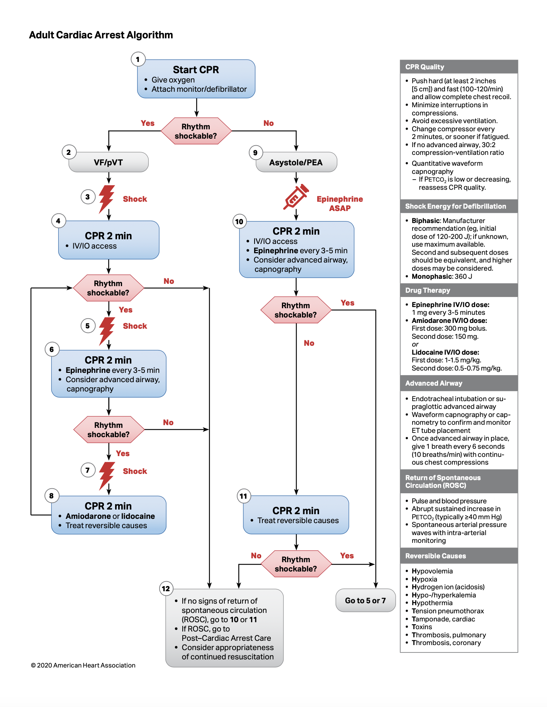
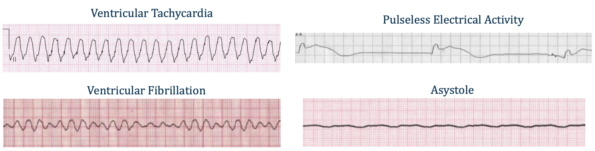
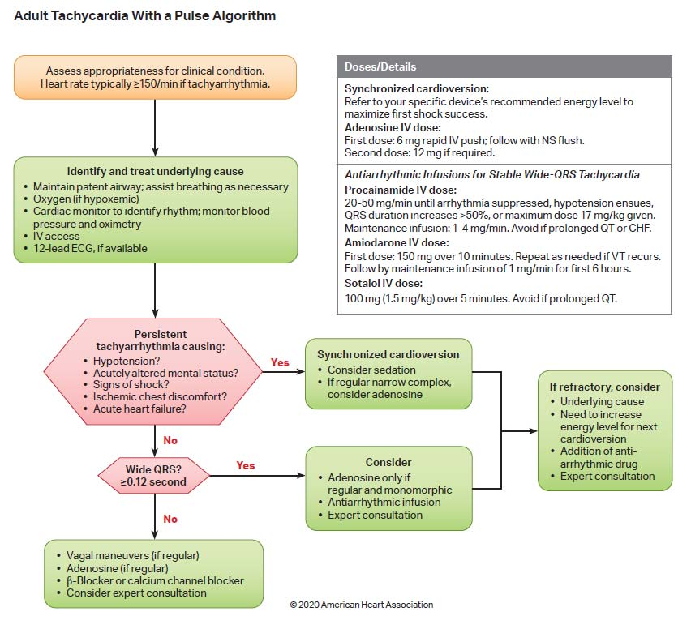
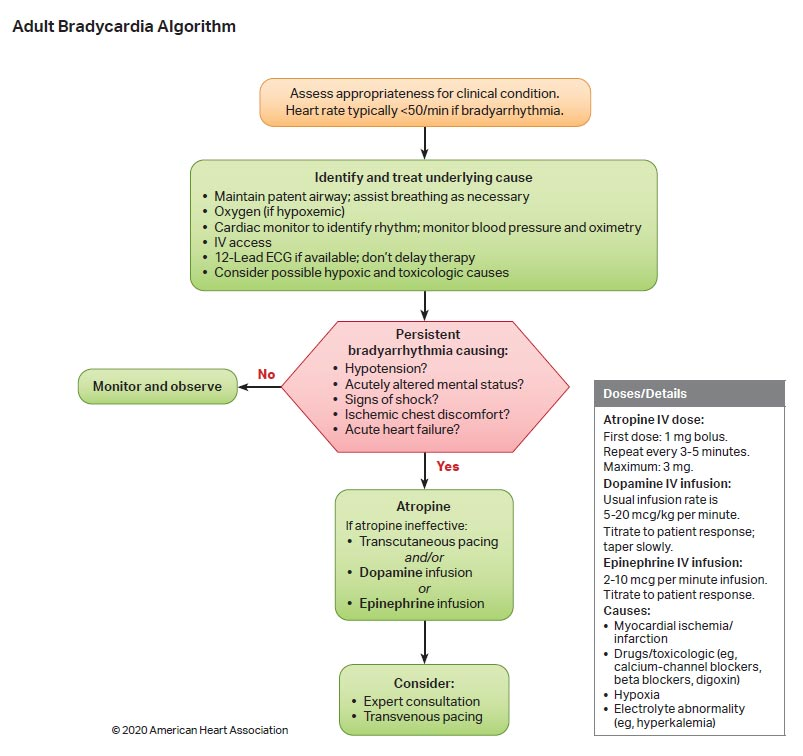
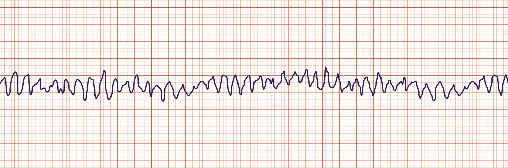
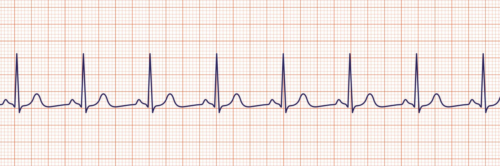

急救
便利貼 3：急救區
在急救區這裡，最重要的就是要快速做出正確的處置，請好好熟讀 ACLS
的指引喔！
-
心跳停止
- Cardiac arrest algorithm

- 首先要快速確認病人意識 → 無意識 → 進行CPR＋給氧＋裝監視器
- 區分心率能否電擊？

-
Ventricular fibrillation (or pVT) → 能電
- Shock — 200J
- CPR + IV line
- Reassess, if still in Vfib
- Shock — 200J + CPR (2 mins)
-
Give 1mg epinephrine + (intubation)，之後固定每3-5分鐘補一支
- Reassess, if still in Vfib
- Shock — 200J + CPR (2 mins)
- Give 300 mg amiodarone（第二劑後150mg）
-
Asystole (or Pulseless Electrical Activity, PEA) → 不能電
- give 1mg epinephrine every 3-5 mins
- BLS + CPR (2 mins)
- Reassess by ECG (rhythm check), if still in asystole:
- CPR (2 mins) + 5H5T
-
Reversible causes of cardiac arrest — 5H5T
- 從病史和檢查找線索：
- 看生命徵象
- Hypoxia（測 SpO2）
- Hypovolemia（測血壓）
- Hypothermia（測體溫）
- 病史＋心電圖
-
Hyper/hypokalemia（驗鉀離子）
-
病史：CKD需注意！另外服用利尿劑也可能導致低血鉀
-
低血鉀 EKG
- 小 T 波，明顯 U 波
- prolonged QT
- ST depression
-
高血鉀 EKG
- 高 T 波，平 P 波，寬 QRS
- prolonged PR
-
Hydrogen ion（抽 blood gas）
-
Toxin（驗毒物）
- 病史：急救前有打什麼藥，吸毒/自殺進來的
- EKG：常有 prolonged QT
-
Thrombosis coronary（看12導程EKG）
- 檢查心臟、肺臟
-
頸靜脈怒張 → Tamponade cardiac,
Thrombosis
pulmonary（可能伴有單側下肢腫或DVT病史）
-
呼吸音消失、氣管偏移 → Tension
pneumothorax
- 如果心率改變則再次檢查脈搏
-
恢復心率後進復甦後護理
-
心搏過速
- Tachycardia algorithm

- 辨認病人穩不穩定 （stable → 給藥；unstable → 同步電擊）
-
不穩定特徵
- 低血壓
- 急性意識改變
- 休克
- 缺血性胸痛
- 急性心衰竭
- 分析心率（寬or窄）並給予適當處置
-
窄（QRS interval <120ms）
- 處置
- 規則 → adenosine
-
可能心率：
- Sinus tachycardia
- Atrial tachycardia
- Atrial flutter
- PSVT & AVNRT
- Wolff-Parkinson-White syndrome & AVRT
- 不規則 → beta blocker, CCB, amiodarone
- 可能心率：Atrial fibrillation
-
寬（QRS interval ≥120ms）
- 處置
-
只有規則、monomorphic 的 ventricular tachycardia 才給
adenosine 6mg
-
Polymorphic Ventricular Tachycardia → IV amiodarone +
會診心內
- Torsades de Pointes → IV magnesium sulfate
- 若無效，考慮背後原因、同步電擊、加抗心律不整藥物、會診
-
心搏過慢
- Bradycardia algorithm

- 辨認病人穩不穩定（stable → 持續監測；unstable → 治療）
-
不穩定特徵
- 低血壓
- 急性意識改變
- 休克
- 缺血性胸痛
- 急性心衰竭
- 不穩定治療
- 無效：
- Give 1mg atropine IVP
- Reassess
- TCP or dopamine infusion → 5-20 mcg/kg/min
- OR epinephrine infusion → 2-10 mcg/kg/min
這個病人確認無呼吸心跳後，進入 ACLS
心跳停止流程，進行CPR，給氧和裝監視器
- 病人心率

-
可判斷此為Ventricular fibrillation，為可電擊心率
- 進行 200J 雙相不同步電擊
- CPR + IV line
- 兩分鐘後重新評估，心率仍為Vfib: Shock — 200J + CPR (2 mins)
- Give 1mg epinephrine
- 兩分鐘後重新評估，心率仍為Vfib: Shock — 200J + CPR (2 mins)
- Give 300 mg amiodarone
此病人在輸 amiodarone 後心率改變
- 病人心率

-
重新評估呼吸心跳 →
無呼吸心跳，判斷此為PEA，為不可電擊心率
-
停止去顫，給予每3-5分鐘一次 1mg epinephrine 並持續
CPR
-
使用 5H5T 鑑別診斷 → 有頸靜脈怒張，結合病史懷疑 cardiac tamponade,
pulmonary embolism, cardiogenic shock
- 緊急處置：超音波發現心包積液，執行心包穿刺術，釋放心包壓力
心包穿刺術後，患者恢復呼吸心跳
- keep vital sign ＆ 溫度管理
- 會診心臟和胸腔科